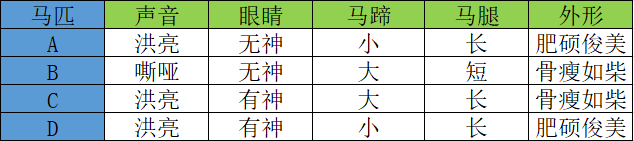
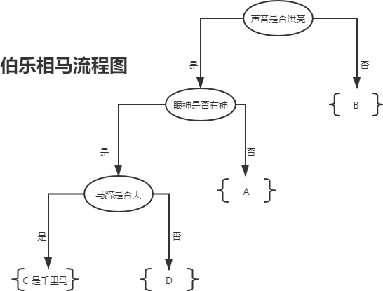

决策树分类算法（if-else原理）
在本节我们将介绍“机器学习”中的“明星”算法“决策树算法”。决策树算法在“决策”领域有着广泛的应用，比如个人决策、公司管理决策等。其实更准确的来讲，决策树算法算是一类算法，这类算法逻辑模型以“树形结构”呈现，因此它比较容易理解，并不是很复杂，我们可以清楚的掌握分类过程中的每一个细节。
if-else 有两个特性：一是能够利用 if -else 进行条件判断，但需要首先给出判断条件；二是能无限嵌套，也就是在一个 if-else 的条件执行体中，能够再嵌套另外一个 if-else，从而实现无限循环嵌套。
下面我看一个简单的应用示例，相信你能从中体会到“决策树”的魅力。古人有“伯乐识别千里马”那么“伯乐”是如何“相马”的呢？下表列出了 A、B、C 、D 四匹马，它们具有以下特征：
如果你是“伯乐”会如何从中挑选出那匹“千里马”呢？毫无疑问，我们要根据马匹的相应特征去判断，而这些特征对应的值叫做“特征维度值”，下面是一位“伯乐”利用 if -else 原理，最终成功的审识别出“千里马”的全过程，如下所示：
上图 1 所示是一颗典型的树形结构“二叉树”，而决策树一词中的“树”指的就是这棵树。上图展示了伯乐“识别”千里马的全过程，根据特征值的有无（if-else原理）最终找出“千里马。你可能会问为什么并没囊括所有的特征值？
这是因为某些特征值对于结果的判断而言，并不是最为关键的特征值，比如马的“体型”，“骨瘦如柴”并不能决定某一匹马不是“千里马”。而“马腿”的长短没有作为判断条件，这是因为使用前三个特征值就已经完成了结果的分类，如果此时再使用“马腿”长短作为判断条件，则有点多此一举。
如果将上述判断的流程用 if-else 的伪代码写出来，如下所示：
在机器学习中，决策树算法是一种有监督的分类算法，我们知道机器学习其实主要完成两件事，一个是模型的训练与测试，另外一个是预测数据的（分类问题，预测类别），因此对于决策树算法而言，我们要考虑如何学会自动选择最合适的判别条件，如图 1 所示，只利用前三个特征就完成了分类的预测。这也将是接下来要探讨的重要问题。
if-else原理
想要认识“决策树算法”我们不妨从最简单的“if - else原理”出发来一探究竟。作为程序员，我相信你对 if -else 原理并不感到陌生，它是条件判断的常用语句。下面简单描述一下 if -else 的用法：if 后跟判断条件，如果判断为真，也即满足条件，就执行 if 下的代码段，否则执行 else 下的代码段，因此 if-else 可以简单的理解为“如果满足条件就....，否则.....”if-else 有两个特性：一是能够利用 if -else 进行条件判断，但需要首先给出判断条件；二是能无限嵌套，也就是在一个 if-else 的条件执行体中，能够再嵌套另外一个 if-else，从而实现无限循环嵌套。
下面我看一个简单的应用示例，相信你能从中体会到“决策树”的魅力。古人有“伯乐识别千里马”那么“伯乐”是如何“相马”的呢？下表列出了 A、B、C 、D 四匹马，它们具有以下特征：

如果你是“伯乐”会如何从中挑选出那匹“千里马”呢？毫无疑问，我们要根据马匹的相应特征去判断，而这些特征对应的值叫做“特征维度值”，下面是一位“伯乐”利用 if -else 原理，最终成功的审识别出“千里马”的全过程，如下所示：

图1：决策树流程图
图1：决策树流程图
上图 1 所示是一颗典型的树形结构“二叉树”，而决策树一词中的“树”指的就是这棵树。上图展示了伯乐“识别”千里马的全过程，根据特征值的有无（if-else原理）最终找出“千里马。你可能会问为什么并没囊括所有的特征值？
这是因为某些特征值对于结果的判断而言，并不是最为关键的特征值，比如马的“体型”，“骨瘦如柴”并不能决定某一匹马不是“千里马”。而“马腿”的长短没有作为判断条件，这是因为使用前三个特征值就已经完成了结果的分类，如果此时再使用“马腿”长短作为判断条件，则有点多此一举。
如果将上述判断的流程用 if-else 的伪代码写出来，如下所示：
if (特征值"声音"为"是"):
if(特征值"眼睛有神"为"是"):
if (特征值"马蹄大"为"是"):
类别千里马 C
else:
类别普通马匹 D
else:
类别普通马匹 A
else:
类别普通马匹 B
决策树算法关键
了解了“if-else”原理，下面我们进一步认识决策树算法。决策树算法涉及了几个重要的知识点：“决策树的分类方法”，“分支节点划分问题”以及“纯度的概念”。当然在学习过程中还会涉及到“信息熵”、“信息增益”、“基尼指数”的概念，相关知识在后面会逐一介绍。特征维度&判别条件
我们知道分类问题的数据集由许多样本构成，而每个样本数据又会有多个特征维度，比如前面例子中马的“声音”，“眼睛”都属于特征维度，在决策算法中这些特征维度属于一个集合，称为“特征维度集”。数据样本的特征维度与最终样本的分类都可能存在着某种关联，因此决策树的判别条件将从特征维度集中产生。在机器学习中，决策树算法是一种有监督的分类算法，我们知道机器学习其实主要完成两件事，一个是模型的训练与测试，另外一个是预测数据的（分类问题，预测类别），因此对于决策树算法而言，我们要考虑如何学会自动选择最合适的判别条件，如图 1 所示，只利用前三个特征就完成了分类的预测。这也将是接下来要探讨的重要问题。
关注公众号「站长严长生」，在手机上阅读所有教程，随时随地都能学习。内含一款搜索神器，免费下载全网书籍和视频。

微信扫码关注公众号